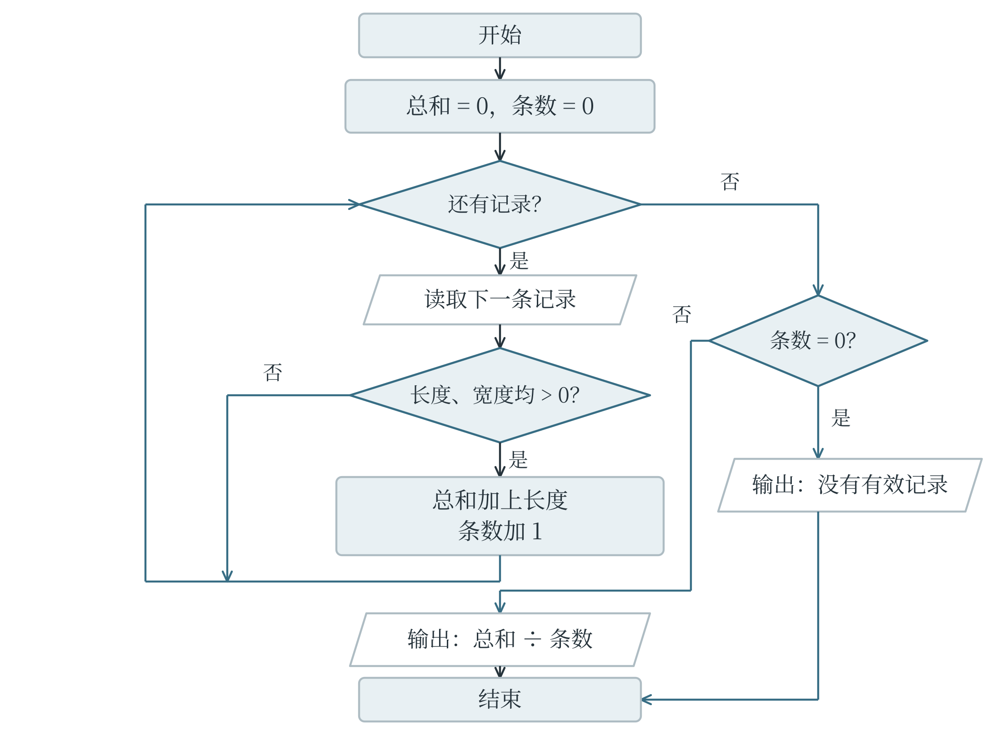

4.1 问题分解、抽象与信息表示
从一段要求到可以计算的问题
“整理一批植物观测记录”还不是一条足够明确的程序指令。整理可以指检查缺失项，也可以指计算平均长度，或者按类别分组。若要求改为“读入每片叶子的编号、长度和宽度，去掉长度或宽度不大于零的记录，计算其余记录的平均长度”，输入、处理规则和输出便清楚了。输入是原始记录，输出是一个平均数；其中还隐含着一个必须处理的情况：如果没有留下任何有效记录，就没有可计算的平均数。
将一个大问题拆成若干较小的问题，称为问题分解。上面的任务可以拆成读取、检查、统计和输出四部分。每部分的结果要能交给下一部分使用：检查过程应交出有效记录，或者交出它们的长度总和与条数。子问题不一定彼此毫无关系，关键是明确各自负责什么、需要什么输入、产生什么输出。
只保留与当前任务有关的信息，暂时略去其他细节，称为抽象。计算平均叶长时，不需要记录叶片的每一个锯齿；研究叶缘形状能否区分植物时，锯齿却可能成为重要特征。抽象并不是随意删减，而是根据要回答的问题决定保留什么。用叶长和叶宽预测植物类别，还作出了一个建模选择：希望仅凭这两个测量值就能获得有用的判断。如果两类植物在这两个数值上几乎重叠，模型效果不佳可能是信息不足，不能只归咎于算法。
计算模型是对对象及其关系的一种可计算表示，可以是一组方程、一张表、一幅图，也可以是一套状态变化规则。模型与现实之间需要约定。例如，把走廊交叉口表示为点、走廊表示为连线，是为了研究路线；如果目标是计算通行时间，还应记录各段耗时。把所有走廊都当成一样长虽然方便，却可能选出经过路口少、实际用时反而多的路线。
计算结果能否回答实际问题，先要看模型保留的信息是否合适。
算法的三种表达
自然语言适合说明思路，但“处理合适的记录”这样的说法仍有歧义。伪代码把关键动作、判断和重复写得更明确，不要求遵守某种编程语言的全部语法。平均叶长的算法可以表述为：先将总和与条数设为零；依次检查每条记录；若长度和宽度均大于零，就累加长度并增加条数；检查结束后，条数为零则报告没有有效记录，否则用总和除以条数。
总和 ← 0，条数 ← 0
对每条记录重复：
如果长度 > 0 且宽度 > 0：
总和 ← 总和 + 长度
条数 ← 条数 + 1
如果条数 = 0：
输出“没有有效记录”
否则：
输出总和 ÷ 条数
箭头表示赋值，缩进表示哪些动作受同一个条件或循环控制。这段伪代码保留了程序结构，但“对每条记录重复”没有使用 Python 的具体语法，因此用于交流算法思路，不能直接作为 Python 程序运行。流程图用图形表达同样的过程。常见约定中，圆角框表示开始和结束，矩形表示处理，菱形表示条件判断，平行四边形表示输入或输出，箭头表示执行方向。图 4-1 用“是否还有记录”和“记录是否有效”两个判断组织循环。菱形的出口需要标明条件，否则读者无法知道下一步走哪条线。
写成 Python 后，变量负责保存过程中的信息，循环负责依次处理记录。这里的列表中，每个元组依次保存长度和宽度；负数表示一条有问题的记录，不能当作正常叶长参与统计。
records = [(4.0, 1.5), (-2.0, 1.0), (6.0, 2.0)]
total = 0.0
count = 0
for length, width in records:
if length > 0 and width > 0:
total += length
count += 1
if count == 0:
print("没有有效记录")
else:
print(total / count)
第一条和第三条记录被保留，最终输出 5.0。total 与 count 必须同步更新：若总和只累加有效记录，条数却把所有记录都算进去，结果便会偏小。这种检查方法也适用于更复杂的代码：观察几个相互关联的量是否描述同一批对象，比只盯着最后一行更容易找到错误。

编码、解码与规律
编码是按约定规则把信息转换成另一种表示，解码则根据规则还原信息。假设给四种图形编号：圆为 00、三角形为 01、正方形为 10、五角星为 11。图形序列“圆、正方形、三角形”便编码为 001001。由于每个编码都长两位，解码时从左到右每两位分一组即可。两个二进制位有 \(2^2=4\) 种组合，若要表示五种图形，两个位就不够了。
固定长度使这次解码很方便。若换成长度不同的码字，情况就未必如此。例如，规定 A 对应 0、B 对应 01、C 对应 1，字符串 01 既可能表示 B，也可能表示 AC。只知道字符与码字的对应表，还不足以唯一解码。可以改用固定长度，增加分隔符，或者设计不会相互混淆的码字。题目给出编码方法时，应先弄清分组、顺序和边界；不能擅自把另一套熟悉规则套进来。
编码也不等于加密。知道公开规则的人，通常都可以据此还原信息。
规律识别可以减少逐项计算。例如，灯光依次重复“红、蓝、蓝”，循环长度为 3。若从第 1 次开始编号，第 \(n\) 次在一轮中的位置由 \((n-1)\) 除以 3 的余数决定：余数 0 对应红色，余数 1、2 对应蓝色。第 10 次的余数是 0，所以是红色。先减 1，是因为 Python 列表索引从 0 开始，而题目编号从 1 开始。
pattern = ["红", "蓝", "蓝"]
n = 10
print(pattern[(n - 1) % len(pattern)])
从已经看到的几个数猜测规律，与按已知规则推算，并不是同一件事。序列 2、4、6 可以继续为 8，也可能只是另一条复杂规则的开头。题目若明确给出循环规则，就能据此计算；若要求从数据中寻找模式，还需要检验后续记录。机器学习同样要面对这种区别：拟合了已有记录，不等于已经证明未来必然如此。
按规则完成一次解码
解码可以组织成一个小算法。沿用每个图形占两个二进制位的约定，字符串 001001 应分成 00、10、01 三组。分组的起点依次为索引 0、2、4，每次取当前位置及其后的一位。这里已经约定字符串长度为偶数，而且所有字符都是 0 或 1；因此每一组都能在编码表中找到对应图形。
codebook = {"00": "圆", "01": "三角形",
"10": "正方形", "11": "五角星"}
encoded = "001001"
decoded = []
for start in range(0, len(encoded), 2):
piece = encoded[start:start + 2]
decoded.append(codebook[piece])
print(decoded) # ['圆', '正方形', '三角形']
range() 的步长决定每次从哪里开始，切片的右端点决定这一组包含哪些字符。两者共同实现固定长度分组。若把步长改为 1，就会读出彼此重叠的片段，已经不是原来的解码方法。若题目把每个图形的编码改成三位，则需要同时改变步长、切片长度与编码表，不能只修改其中一处。输入、规则和结果之间的关系还可以反过来检验：把解码后的图形再按同一套规则编码，应当得到原来的字符串。这个检验称不上证明所有输入都正确，却能帮助发现本次分组或查表中的错误。